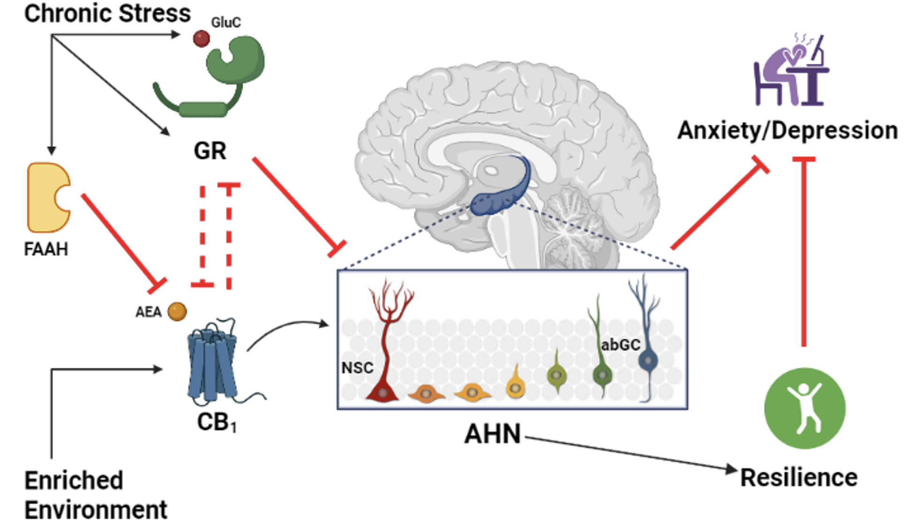

Risultati Attesi e Impatto
Potenziale Impatto Socio-Economico
- Sviluppo di nuovi approcci terapeutici basati sulla neurogenesi per migliorare la resilienza allo stress cronico
- Comprensione delle differenze di genere nella vulnerabilità e nella resilienza allo stress cronico
- Riduzione dell'impatto socio-economico delle condizioni neuropsichiatriche legate allo stress
Impatto sulla Salute Pubblica
I disturbi d'ansia e depressione rappresentano una sfida significativa per la salute pubblica e l'economia globale. Ecco alcuni dati che illustrano la portata del problema:
- Circa il 20% della popolazione nei paesi occidentali è affetto da disturbi d'ansia o depressione
- Il costo economico annuale di questi disturbi supera i 40 miliardi di dollari
- In Australia, questi disturbi causano 20 milioni di giorni lavorativi persi all'anno
Importanza del Progetto
- Mancanza di trattamenti efficaci: c'è un urgente bisogno di comprendere meglio i meccanismi neurobiologici alla base di questi disturbi
- Ricerca di nuove soluzioni: il progetto mira a identificare nuovi percorsi molecolari che potrebbero diventare bersagli terapeutici
- Differenze di genere: lo studio si propone di comprendere le basi molecolari che determinano la diversa vulnerabilità o resilienza allo stress tra maschi e femmine
